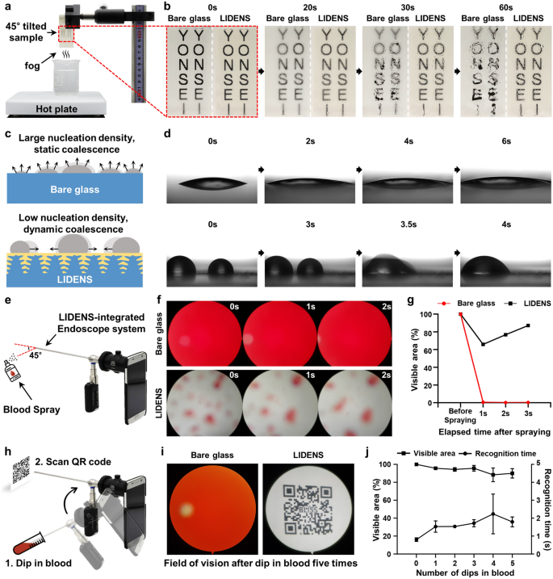

연구 개요
연세대학교 BLISS Lab(서정목 교수 연구실)이 한국과학기술연구원(KIST) 연구진, 임상 연구진과 함께 펨토초(fs) 레이저로 내시경 렌즈에 미세·나노 구조를 직접 새기고 의료용 과불화탄소 윤활액을 주입한 표면(lubricant-infused directly engraved nano-/micro-structured surface, LIDENS)을 개발한 연구입니다. 최적화한 구조는 윤활액 주입 후 가시광의 84% 이상을 투과했고, LIDENS를 적용한 내시경은 혈액에 반복 담근 뒤에도 시야 면적의 80% 이상을 유지했습니다.
연구 배경
내시경 시야는 체액이 렌즈를 오염시키거나 수증기 응결로 김이 서리면 사라집니다. 렌즈를 조직에 문지르거나 흡인·세척 채널을 추가하거나 내시경을 빼내 닦는 방법은 조직 손상, 기구 대형화, 감염 위험의 우려가 있습니다. 초친수성 표면은 김 서림을 막지만 점성 체액에 오염되고, 초소수성 표면은 혈액을 밀어내지만 응결된 물방울이 붙어 김이 서리므로, 저자들은 어느 한 성질만으로는 두 문제를 함께 해결할 수 없다고 봅니다. 입자를 쌓아 만든 윤활액 주입 다공성 코팅은 두 문제를 모두 다루지만 기계적 자극에 입자가 떨어져 나갈 수 있습니다.
설계와 접근
fs 레이저로 한 줄씩 어블레이션하면 유리 자체에 레이저 유도 주기 표면 구조가 생기므로, 다공층이 별도 코팅처럼 떨어져 나가지 않습니다. 높은 플루언스와 넓은 선 간격(87.84 J/cm2, 10 µm)에서는 마이크로 규모의 저공간주파수 구조(LSFL)가, 낮은 플루언스와 좁은 선 간격(2.44 J/cm2, 5 µm)에서는 나노 규모가 우세한 고공간주파수 구조(HSFL)가 형성됐습니다. 새긴 표면에는 불소계 자기조립 단분자막(F-SAM)을 입혀 표면 에너지를 낮추고 윤활액과의 친화성을 높였습니다. 비교한 과불화탄소 윤활액 4종 가운데 렌즈와 굴절률이 비슷한 GPL 103을 이후 모든 실험에 사용했습니다.

LIDENS 처리 유리가 수증기와 혈액 노출 조건에서 시야를 유지하는지 비교한 시험입니다.
Yeontaek Lee, Yong-Woo Chung, Jaeho Park 외. “Lubricant-infused directly engraved nano-microstructures for mechanically durable endoscope lens with anti-biofouling and anti-fogging properties”. Figure 4. DOI: 10.1038/s41598-020-74517-8. CC BY 4.0. 그림 내용은 변경하지 않았습니다.
원그림과 원문 설명 ↗ · DOI: 10.1038/s41598-020-74517-8 ↗ · CC BY 4.0 ↗
평가 방법
자외선-가시광 분광법으로 투과율을, X선 광전자 분광법(XPS)으로 표면 화학 조성을 측정했고, 물, 혈액, 유사 체액, 저표면장력 액체에 대한 접촉각(CA), 접촉각 이력(CAH), 미끄럼각(SA)을 측정했습니다. 알부민과 피브리노겐 흡착은 24시간 침지 후 영상으로 확인했습니다. 기계적 내구성은 상용 입자 기반 코팅(PBC)과 비교한 테이프 박리 30회(접착력 2600 N/m 테이프), 0.5 kg 하중의 선형 마모 30회, 121 °C 15분 오토클레이브 6회(매회 윤활액 재주입)로 평가했습니다. 김 서림은 상대습도 100%의 수증기 위에서 시험했고, 지름 4 mm의 LIDENS 유리를 경성 내시경과 스마트폰 카메라에 결합해 탈섬유소 말 혈액 분무와 혈액 5회 연속 침지 시험을 수행했습니다.
연구 내용과 주요 결과
윤활액 주입 전에는 HSFL 표면의 투과율이 LSFL보다 약 9% 높았습니다. 윤활액 주입 후 LSFL 표면은 가시광의 약 28%만 투과했지만, HSFL 표면은 투과율이 8배 증가해 84% 이상을 투과했으므로 이후 LIDENS 시료에는 HSFL을 사용했습니다. 초록은 투명도를 70% 초과로 보고합니다. F-SAM 코팅 후 XPS에서는 약 688 eV의 F1s 피크가 크게 증가했습니다. 코팅하지 않은 가공 표면은 액체에 완전히 젖었고(CA ≤ 5°), F-SAM 코팅 표면은 물과 혈액에 대해 160°를 넘는 CA를 보였으나 디메틸설폭사이드와 에틸렌글리콜은 고정됐습니다. 윤활액 주입 후에는 표면장력이 30 mN/m 미만인 70 vol% 에탄올과 헥산을 포함한 모든 시험 액체에서 SA가 15° 이하였습니다.
45° 경사에서 혈액 방울은 맨 유리 위를 3초 넘게 미끄러지며 얼룩을 남겼지만, LIDENS 위에서는 1.5초 안에 잔류물 없이 흘러내렸습니다. 24시간 침지 후 맨 유리에는 알부민과 피브리노겐이 상당량 흡착됐으나 LIDENS의 흡착은 무시할 수준이었습니다.
테이프 박리 30회 후 F-SAM 코팅 가공 표면에는 유의한 형상 변화가 없었습니다. CAH는 테이프 박리 직후 약 7°에서 약 30°로 올랐고 이후 반복 박리에서는 10° 미만으로 증가했으며, 저자들은 그 가능한 원인으로 테이프 접착층 잔류와 국소 손상을 제시합니다. PBC는 코팅이 떨어져 나가 CA가 30° 넘게 감소하고 CAH가 45° 넘게 증가했습니다. 마모 30회 후에도 거칠기는 높게 유지됐고(Ra > 80 nm, Rq > 99 nm), CA와 CAH 상승은 각각 2°와 4° 미만이었습니다. 오토클레이브는 윤활액 증발을 가속했지만 재주입 후 SA는 15° 미만으로 회복됐고, 윤활액을 완전히 제거하면 CA가 160°를 넘는 F-SAM 코팅 표면 상태로 돌아가 멸균 후에도 F-SAM이 유지됨을 보였습니다. LIDENS는 인산완충식염수에서 60 rpm으로 28일간 흔든 뒤에도 SA를 유지했습니다.
수증기 위에서 LIDENS의 응결수는 흘러내렸지만 맨 유리는 고정된 물방울로 덮였으며, 저자들은 이를 낮은 핵생성 밀도와 이동성 높은 물방울의 동적 합체로 설명합니다. 혈액을 작은 방울(≤ 1 µL)로 분무하자 맨 내시경은 즉시 시야를 완전히 잃었지만, LIDENS에서는 방울이 합쳐져 흘러내리며 시야가 점차 회복됐습니다. 일부 작은 방울은 남았으며, 저자들은 이를 표면의 유지력(10 µN 미만)과 혈액의 낮은 표면장력(58 mN/m)과 관련지어 설명합니다. 혈액 5회 연속 침지 후 맨 내시경은 QR 코드를 인식하지 못했지만 LIDENS 내시경은 인식했고, 네 번째 침지 후 시야가 일부 줄었다가 이후 침지에서 회복되어 면적의 80% 이상을 유지했습니다.
남은 과제
저자들은 분무 후 중력으로 제거되기에 너무 작은 혈액 방울 일부가 렌즈에 남았으며, 가볍게 흔들거나 반복 침지하면 제거된다고 밝힙니다. 멸균은 윤활액 증발을 가속했고, 매 오토클레이브 후 성능은 윤활액 재주입으로 회복됐습니다.
함께 읽을 연구
Bioinspired self-repairing slippery surfaces with pressure-stable omniphobicity
SLIPS는 벌레잡이통풀(Nepenthes)에서 착안해 다공성 고체에 윤활액을 붙잡아 액체를 밀어내고 손상 후 회복하는 표면입니다. LIDENS는 이 원리를 내시경 렌즈에 적용하되, 다공층을 유리에 직접 새기고 광 투과성까지 함께 유지해야 합니다.
초록을 참고한 소개해설에 사용한 자료
이 해설은 오픈액세스 논문의 전문과 그림 설명(PMC7566624)을 바탕으로 하며, 보충자료와 보충영상 2편은 검토하지 않았습니다.